PHENOVOXEL ARCHIVE · v0.6.60 · FREE-ONLYBeluga whale
A longer, fuller adult body with two soft lower folds, a compact rounded melon, a short muzzle and a soft chin. Smaller recessed eyes and detailed ivory skin follow the actual rotating 3D surface.
Open interactive 3D study · Open archive specimen · Download neutral model · Download oral display
Changes
- The selected trunk is about 15% longer and 8% fuller centrally, with the head kept compact.
- Two lower folds are sculpted into the surface. Tapered eyelids, a softer chin and a short projecting muzzle refine the face.
- Original ivory pigment, registered fine skin normals and roughness, local shading calculated from the actual mesh, and wet highlights replace the flatter earlier appearance.
- Seven bounded motion studies retain the same 3D surface. The two downloadable models are static selected poses; movement is available in the interactive study.
Actual 3D views
All sixteen frames are direct renders of the final active model with the same compatibility renderer. They are not animal photographs.
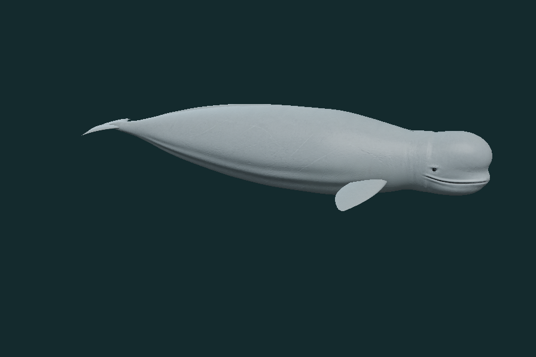
oblique · observe · 0 authored seconds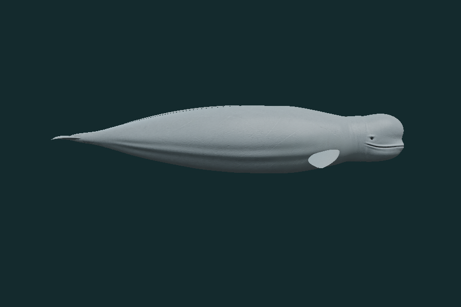
side · observe · 0 authored seconds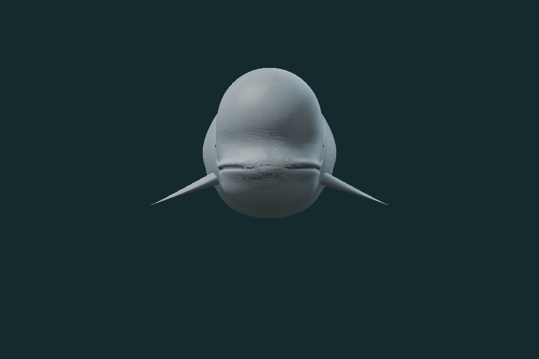
front · observe · 0 authored seconds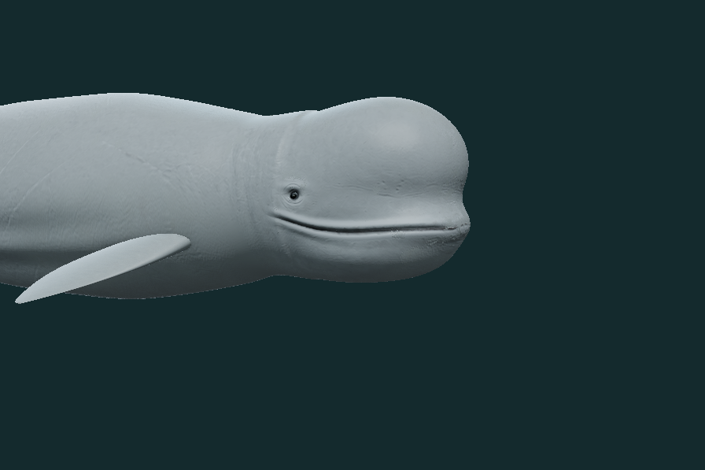
head · observe · 0 authored seconds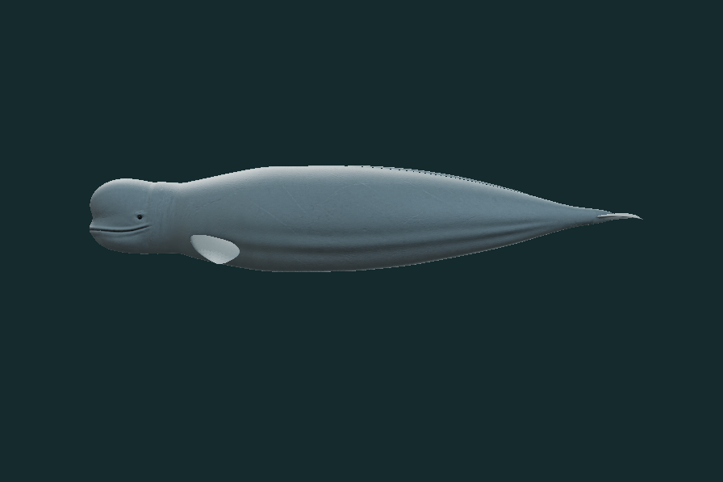
opposite · observe · 0 authored seconds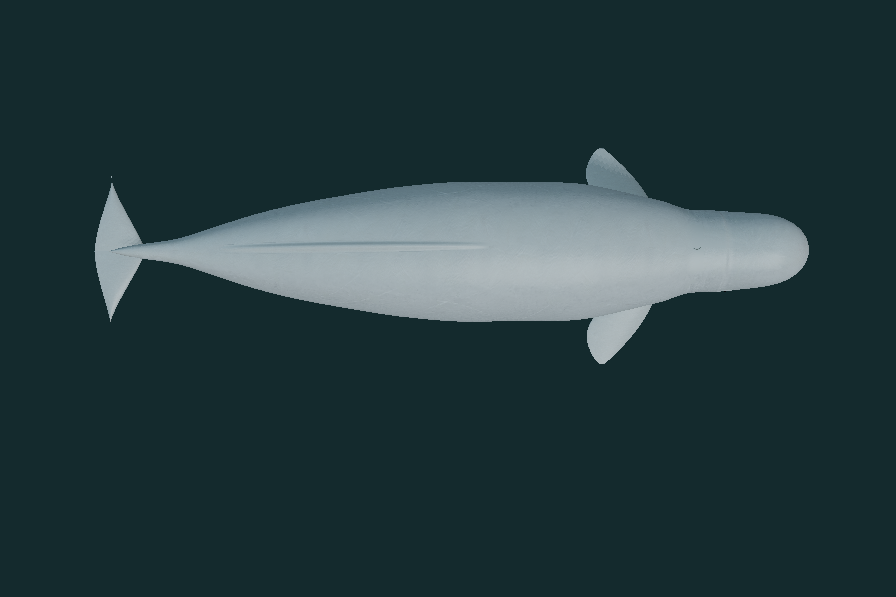
top · observe · 0 authored seconds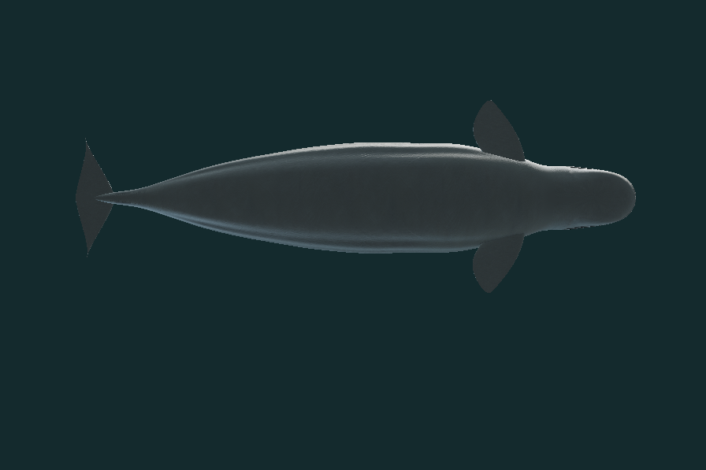
underside · observe · 0 authored seconds action swim · swim · 3 authored seconds
action swim · swim · 3 authored seconds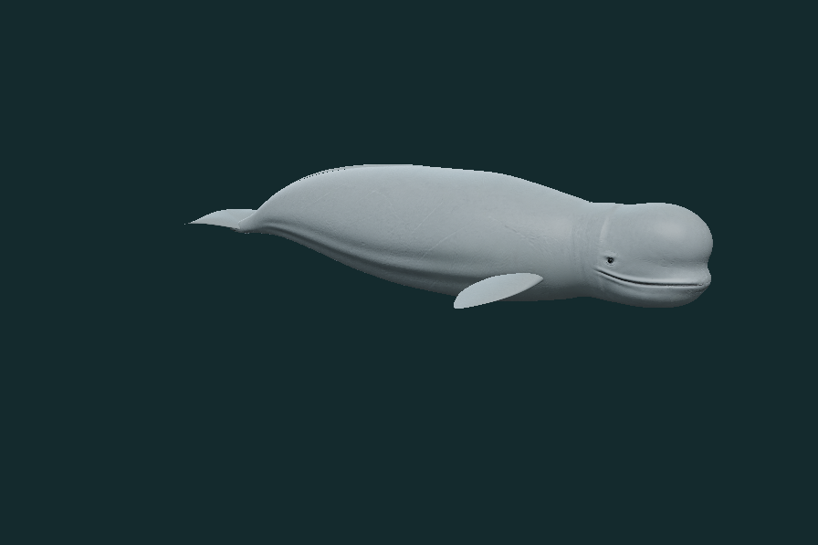
action glide · glide · 3 authored seconds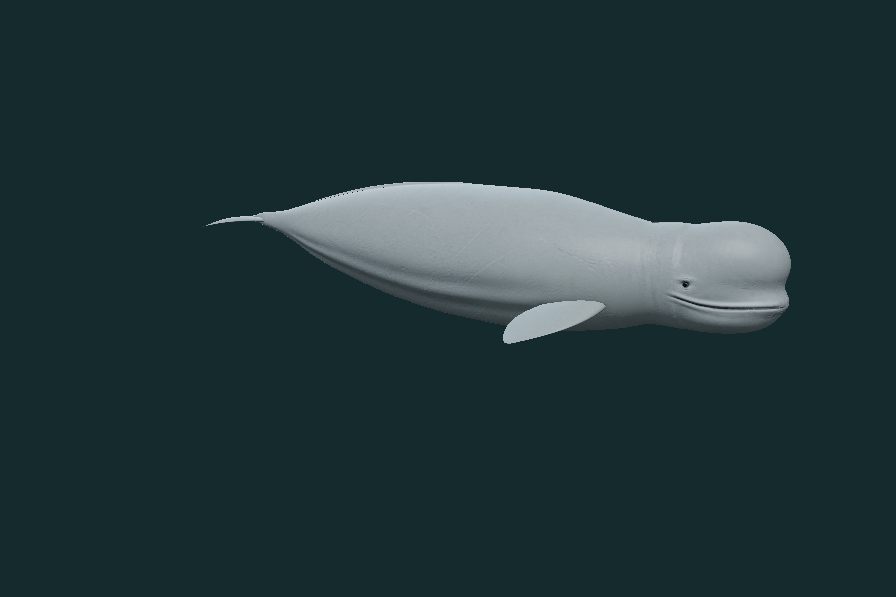
action head · head · 3 authored seconds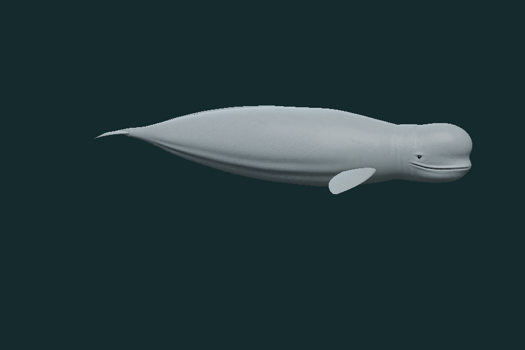
action turn · turn · 6 authored seconds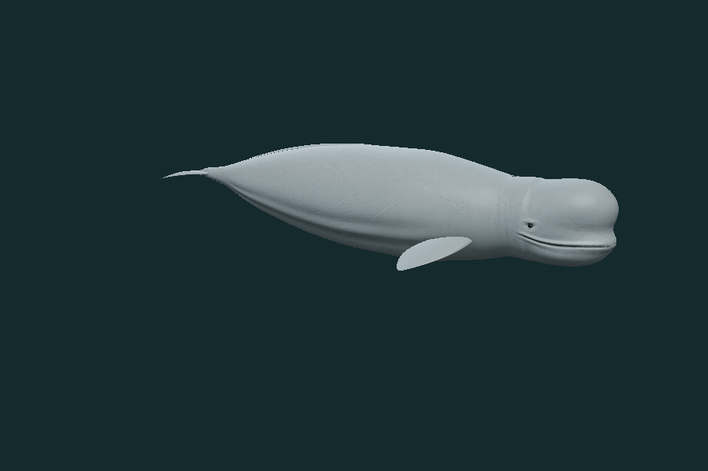
action melon · melon · 3 authored seconds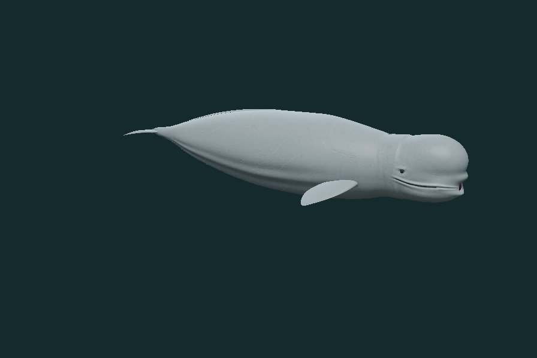
action forage · forage · 3.6 authored seconds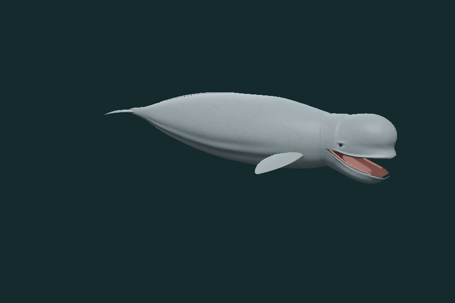
action mouth · mouth · 3.6 authored seconds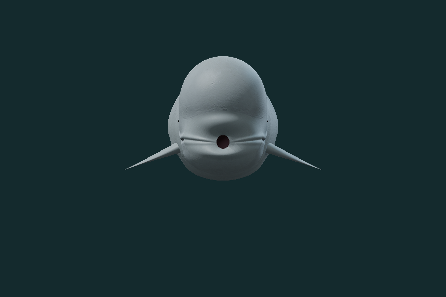
feeding front · forage · 3.6 authored seconds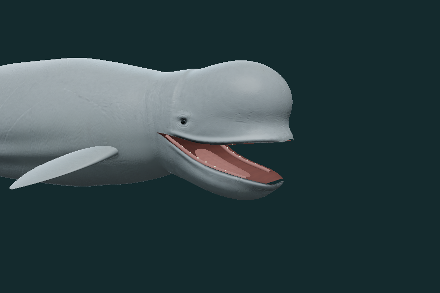
mouth detail · mouth · 3.6 authored secondsSource and scope
This is an authored adult reconstruction, not a living scan or measured individual. Mixed photographs guide proportions and surface details; they do not establish exact dimensions or continuous biological timing. Fine optics and oral tissues remain approximate. The motion studies do not simulate water, pressure, thrust, prey transport, swallowing or sonar.
No paid generation, subscription or 3D credits were used. The active model contains no supplied-photo pixels and no rejected third-party experimental mesh.
Material sources, exact generation prompts and hashes · Rights and changes · Biological evidence · Render and export record